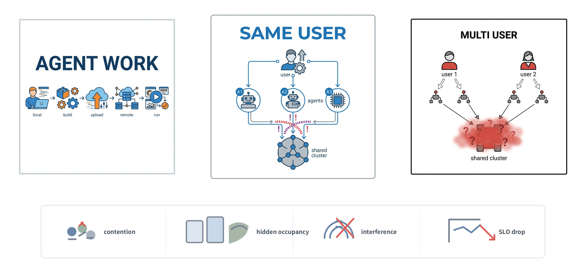
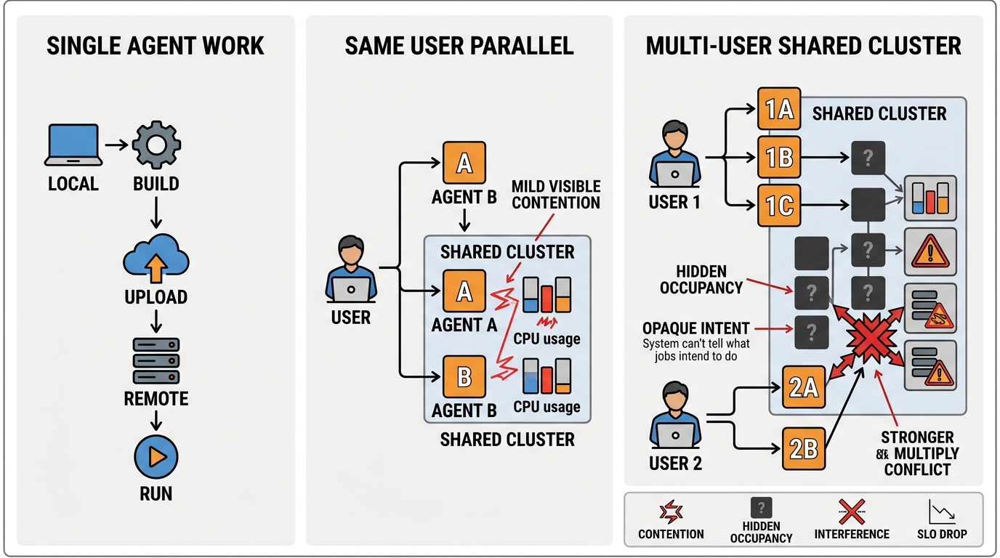
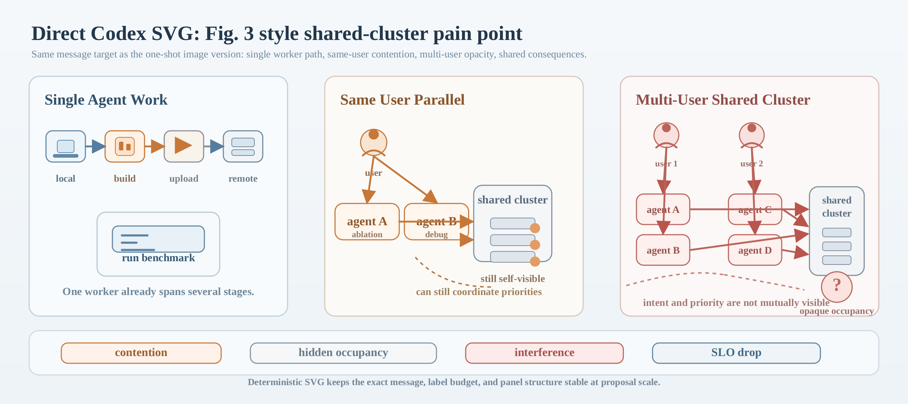

PEV Final
Current Fig. 3 In Proposal

This is the current proposal pain-point figure produced through the project’s PEV-style visual workflow and used in the published PDF.
OpenClaw Academic Supplement
This page is only for the PEV visual-workflow evidence around the proposal pain-point figure. It packages the current final figure, a one-shot OpenRouter baseline, a direct Codex SVG baseline, and the concrete prompts and commands used to make those comparison assets.
PEV Final

This is the current proposal pain-point figure produced through the project’s PEV-style visual workflow and used in the published PDF.
One-Shot Model

Single OpenRouter image-generation run against the same Fig. 3 message target. It is useful for fast ideation but drifts more easily in label budget and emphasis.
Direct SVG

Hand-authored SVG against the same message target. It preserves exact structure and is fully editable, but relies on manual layout discipline instead of executor-plus-validator iteration.
The one-shot model path and the direct SVG path are both valid baselines, but neither one alone is how the current final figure was made. The proposal figure became more reliable by separating message planning, asset execution, and page-scale validation rather than forcing all of that into a single generation step.
This supplement is therefore scoped to the PEV workflow itself: it is not a general appendix, and it exists specifically to show why the final visual asset was stronger than either baseline used alone.
The record below lists the common message target, the final PEV figure path, the validator session, and the exact OpenRouter and direct-SVG commands used for the comparison assets.
Common message target
- Same semantic target as current proposal Fig. 3:
single worker path, same-user visible contention, multi-user opaque contention, bottom consequence strip.
Current PEV-produced figure
- Live asset: /assets/fig3-final-pev.png
- Working source asset: output/section-2-3-panels-final-v2.png
- Validator session:
~/.codex/sessions/2026/03/19/rollout-2026-03-19T16-39-22-019d053f-d4dc-7211-9850-04e0d0ec9f99.jsonl
OpenRouter one-shot comparison
- Live asset: /assets/fig3-openrouter-one-shot.png
- Working asset: output/fig3-openrouter-nanobanana.png
- Command:
source ~/.bashrc >/dev/null 2>&1 && python3 tools/openrouter_generate_image.py \
--model google/gemini-3.1-flash-image-preview \
--modalities image,text \
--aspect-ratio 16:9 \
--prompt "Create a single wide academic infographic on a white background for a systems research proposal. Show the pain point of parallel research on a shared cluster. Use a 3-column plus bottom-strip layout. Left column title: 'Single Agent Work' with a simple pipeline local -> build -> upload -> remote -> run. Middle column title: 'Same User Parallel' with one user launching agent A and agent B onto a shared cluster, with mild visible contention. Right column title: 'Multi-User Shared Cluster' with user 1 and user 2 each launching agents into one shared cluster, with hidden occupancy, opaque intent, and stronger conflict. Bottom strip with four tiny labels only: contention, hidden occupancy, interference, SLO drop. Flat vector academic style, icon-first, thin borders, blue/orange/gray/red palette, large readable English labels, no paragraphs, no product names, no watermark, no glossy poster style, no purple, no decorative background." \
--out output/fig3-openrouter-nanobanana.png
Direct Codex SVG comparison
- Live asset: /assets/fig3-codex-direct.png
- SVG source: /assets/fig3-codex-direct.svg
- Working SVG source: output/fig3-codex-direct.svg
- Render command:
rsvg-convert output/fig3-codex-direct.svg -o output/fig3-codex-direct.png -w 2488
Interpretation
- One-shot image generation is good for fast visual exploration.
- Direct SVG is good for exact control and editability.
- The final proposal figure was stronger because it used PEV rather than relying on only one of those paths.
{kind=link}